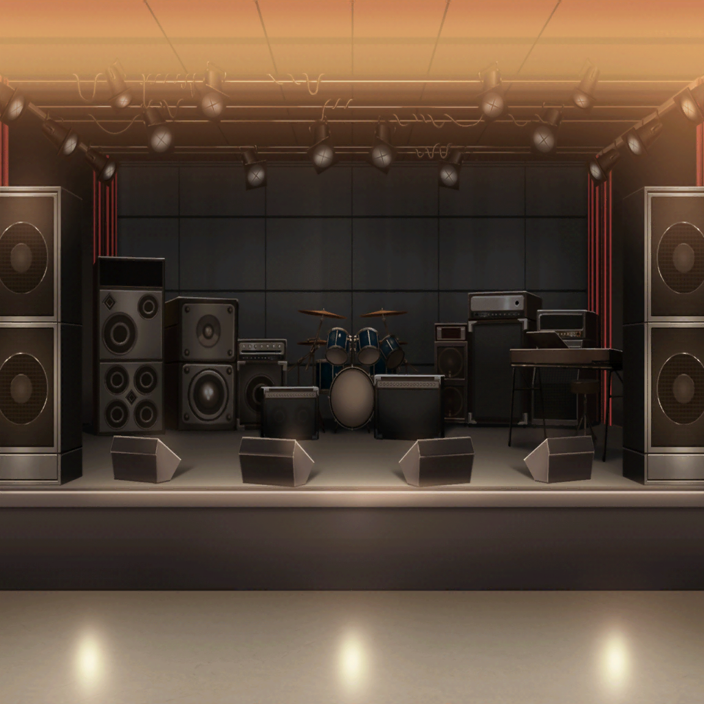

カフェテリア
燐子
ライブ……ハウス……？
あこ
うん！ このカフェの横、ライブハウスなの！
あこ最近、ライブハウス通いにハマっててね
あこ
知る人ぞ知る、自分だけのバンドを見つける……
それってカッコよくないっ？
燐子
……うん、そうだね……
あこ
でしょっ？
でね。ついに見つけたの。あこだけの、超っカッコイイ人！
燐子
そうなんだ……
あこちゃん……カッコイイもの……好きだもんね……
ならとっても、よかったね……
あこ
ありがとーっ
りんりんは、あこのカッコイイもの探しの相方だもんねっ
あこ
ネトゲでもいつも助けてくれて、すっごい感謝してるんだっ。
この前も新しいクエスト手伝ってくれたし、
そのおかげであこは新しい武器作れたし……
あこ
……ってそれはともかく！ だからりんりん、ライブハウス行こ？
燐子
……
……え？
燐子
……えっ、ライブ……ハウス……って、え……
ひ……人……たくさん……！
あこ
あ、そうそう。人は多いけど、
ドリンクカウンターの近くなら空いてるし、平気だよ！
燐子
む、むり……こわい……！ わたし、帰る……！
あこ
大丈夫だよっ。りんりん騒がしいの苦手だから、
今日は、その人の出番だけ見て帰ろう！
……ね、お願い！
燐子
で、でも……！
あこ
じゃあ時間だから、行こっ！
燐子
わ……わたし……
あこ
心配いらないよ。あこがついてるからっ。
それに……あこをいつも助けてくれるりんりんに、
いつかちゃんと、恩返ししたいって思ってたの
燐子
……あこちゃん……
あこ
でね。その超カッコイイ人、友希那っていうんだけど
ほんと超ーーカッコイイから！
りんりんも聴いたら、絶対ハマっちゃうと思うよ！

ライブハウス
友希那
…………
観客
……友希那……！
紗夜
（すごい熱気。こんなにファンがいるの？
しかも、押してるのに全然騒がない。
……みんな、あの子の歌を待ってるみたい……）
あこ
ほら。ここがドリンクカウンター。
ステージから一番遠いから、ここに居れば押されないからね。
……って。りっ、りんりん！？
あこ
わわわわわわ〜！ り、りんりんの顔が青いーー！
燐子
……うち……に……わたし……帰……
あこ
りんりんしっかりしてぇ〜っ。
友希那を観るまで死んじゃだめだよぉ〜〜〜っ
紗夜
（あの人……確か同じクラスの白金さん？
彼女もファンなの？
それにしても隣の子、騒がしい……）
紗夜
ちょっと、あなた達静かに……
友希那
ーーー♪
紗夜
！
あこ
……！
やっぱ……カッコイイ……！
燐子
（！？ ……なに……この声……？ ……こんなの……）
紗夜
（こんなの……聴いたことがない。
言葉ひとつひとつが……音にのって、情景にかわる……
色になって、香りになって……会場が包まれていく……）
紗夜
……本物……だわ……
ーーやっと……見つけた……

ライブ後
友希那
……どうだった？ 私の歌
紗夜
なにも……言うことはないわ。
私が今まで聴いたどの音楽よりも……
あなたの歌声は素晴らしかった
紗夜
あなたと組ませて欲しい。
そして……FUTURE WORLD FES.に出たい。
あなたとなら、私の理想……頂点を目指せる

ライブハウス前
友希那
……あなたと組めることになってよかったわ。
もうスタジオの予約、入れていい？
私、時間を無駄にしたくないの
紗夜
同感だわ。
他に決まっているメンバーは？
友希那
いいえ。まだ誰も。
ベースとドラムのリズム隊、
それにこのジャンルにおいて重要なキーボードも
紗夜
あと３人……。急ぎましょう。
実力と向上心のあるメンバーを見つけ、
少しでも練習時間を確保し……
友希那
最高の曲をつくり、
最高のコンディションで、コンテストに挑む
紗夜
……本当にあなたとは、いい音楽が作れそう
友希那
……そうね。
メロディはさっき聴いて貰ったものを、
私の方で詰めてみるわ
紗夜
では私は、そのあとのパートのベースを……
——！？
あこ
ゆ、ゆ、友希那だ……、友希那だよりんりん……！
ど、どうしよう、ここで待ってたら会えるかもって言ったら
本当に……、本当に会え……っ
燐子
あ……あこちゃん……私、もう……帰……！
あこ
あのっ。あの……さっきの話って……本当ですかっ？
友希那……さん、バンド組むんですか？
友希那
そうね。その予定よ
あこ
……！ ……バンド……！！
あ、あこっ、ずっと友希那さんのファンでした……っ！
……だ……だからお願いっ、あこも入れてっ！
燐子
！？
……あこ……ちゃん……？
あこ
あこ、世界で２番目に上手いドラマーですっ！
１番はおねーちゃんなんですけど！
だから……もし、もし……一緒に組めたら……！
紗夜
ちょっとあなた。私達は本気でバンドを……
友希那
遊びはよそでやって。
私は２番であることを自慢するような人間とは組まない。
行くわよ、紗夜
紗夜
ええ
あこ
あ……
紗夜
（遊びは要らない……この子と私の意識は
限りなく近いところにありそう。
もしかしたら本当に、いいバンドが作れるかもしれない……）